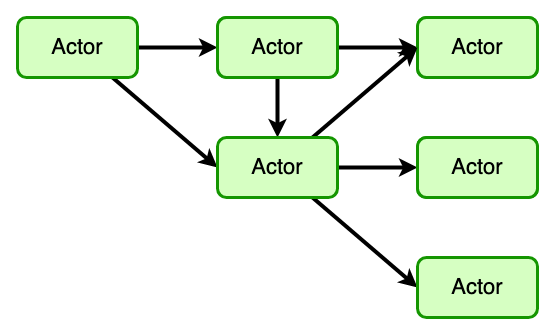

Golang 并发编程
Table of Contents
1. 并发概念
1.1. 并发 vs. 并行
并发 (conrurrent) 和并行 (parallel) 是两个不同的概念，并发强调是“发”（出发），并 行则着重“行”（执行）。并发对应的是顺序，并行对应的是串行。
并发重在避免阻塞，使程序不会因为阻塞而停止执行；并行则是依赖硬件和操作系统的资源。
1.2. 常见并发模型
1.2.1. 共享内存
多线程共享内存。其实就是 Java 或者 C++等语言中的多线程开发。常见访问共享变量，线 程安全的数据结构等
1.2.2. Actor 和 CSP 模型
Don’t communicate by sharing memory, share memory by communicating 不要通过共享内存来通信，而应该通过通信来共享内存
Actor 和 CSP 就是两种基于这种思想的并发编程模型。
- Actor 模型
在 Actor 模型中，主角是 Actor，类似一种 worker，Actor 彼此之间直接发送消息，不需 要经过什么中介，消息是异步发送和处理的：

Actor 模型描述了一组为了避免并发编程的常见问题的公理:
- 所有 Actor 状态是 Actor 本地的，外部无法访问。
- Actor 必须只有通过消息传递进行通信。
- 一个 Actor 可以响应消息:推出新 Actor,改变其内部状态,或将消息发送到一个或多个其他参与者。
- Actor 可能会堵塞自己,但 Actor 不应该堵塞它运行的线程。
Map-Reduce 就是 actor 模型的一个典型应用。
- CSP (communicating sequential processes，通讯顺序进程)
Channel 模型中，worker 之间不直接彼此联系，而是通过不同 channel 进行消息发布和侦 听。消息的发送者和接收者之间通过 Channel 松耦合，发送者不知道自己消息被哪个接收 者消费了，接收者也不知道是哪个发送者发送的消息。
Go 语言的 CSP 模型是由协程 Goroutine 与通道 Channel 实现：
- Go 协程 goroutine: 是一种轻量线程，它不是操作系统的线程，而是将一个操作系统线程 分段使用，通过调度器实现协作式调度。是一种绿色线程，微线程，它与 Coroutine 协程 也有区别，能够在发现堵塞后启动新的微线程。
- 通道 channel: 类似 Unix 的 Pipe，用于协程之间通讯和同步。协程之间虽然解耦，但是 它们和 Channel 有着耦合。
1.2.3. 常见语言的并发模型
- Golang 主要就是实现 CSP 模型里的 process 和 channel 概念，核心是不需要用户来执 行调度，使用了 N:M 方案，简化了开发过程
- Scala 采用的是 Actor 的实现
- Node.js 是单线程通过事件循环来实现并发（并不是并行）
1.3. 调度模式
- 非剥夺调度方式 又称非抢占方式。是指当一个进程正在处理器上执行时 ，即使有某 个更为重要或紧迫的进程进入就绪队列，仍然让正在执行的进程继续执行，直到该进程完 成或发生某种事件而进入阻塞状态时，才把处理器分配给更为重要或紧迫的进程。
- 剥夺调度方式 又称抢占方式。是指当一个进程正在处理器上执行时，若有某个更为 重要或紧迫的进程需要使用处理器，则立即暂停正在执行的进程，将处理器分配给这个更 为重要或紧迫的进程。
2. Golang 并发
3. 常见实践
3.1. Channel
Channel 是 CSP 派生的同步原语之一，是 Golang 推崇的 “使用通信来共享内存，而不是 通过共享内存来通信” 理念的最有利的工具。Channel 大家都比较熟悉，就不过多赘述了。
3.2. Cond
sync.Cond 条件变量用来协调想要访问共享资源的那些 goroutine，当共享资源的状态发生 变化的时候，它可以用来通知被互斥锁阻塞的 goroutine。
条件变量和互斥锁的区别在于互斥锁 sync.Mutex 通常用来保护临界区和共享资源，条件变 量 sync.Cond 用来协调想要访问共享资源的 goroutine。如果用 chan 或者 mutex 来做控 制，最多只能有一个协程等待并获得数据，或者为每个协程建立一个 channel，而 cond 可 以简化这个操作。
每个 Cond 实例都会关联一个锁 L（互斥锁 *Mutex，或读写锁 *RWMutex），当修改条件或 者调用 Wait 方法时，必须加锁。
Cond 用法较复杂，如果想详细了解参考 这一次，彻底搞懂 Go Cond。
Cond 的几个常用方法：
- NewCond
创建实例，需要关联一个锁。
- Broadcast
广播唤醒所有协程，无需锁保护。
- Signal
唤醒随机一个协程，无需锁保护。
- Wait 等待
调用 Wait 会自动释放锁 c.L，并挂起调用者所在的 goroutine，因此当前协程会阻塞在 Wait 方法调用的地方。如果其他协程调用了 Signal 或 Broadcast 唤醒了该协程，那么 Wait 方法在结束阻塞时，会重新给 c.L 加锁，并且继续执行 Wait 后面的代码。
对条件的检查，使用了 for !condition() 而非 if，是因为当前协程被唤醒时，条件不一 定符合要求，需要再次 Wait 等待下次被唤醒。为了保险起见，使用 for 能够确保条件符 合要求后，再执行后续的代码。什么是 spurious wakeups(虚假唤醒)Tornado1102 的博 客-CSDN 博客spurious wakeup
3.3. Sync 包
3.3.1. WaitGroup
WaitGroup 包是最常见等待多组并发完成的操作。
3.3.2. Mutex & RWMutex
互斥锁和读写锁是用于保护临界区和共享资源的一个方式。读写锁一般应用于读多写少的情 况下。锁的要点在于尽可能减少临界区大小，同时注意正确获取释放的方式（防止死锁）。 需要注意的是，在 goroutine 里用 defer 来调用 Unlock 是个常见的习惯用法，确保了即 使出现了 panic，调用也总是执行，防止出现死锁。
3.3.3. Once
sync.Once 是 Go 标准库提供的使函数只执行一次的实现，常应用于单例模式，例如初始化 配置、保持数据库连接等。作用与 init 函数类似，但有区别。
- init 函数是当所在的 package 首次被加载时执行，若迟迟未被使用，则既浪费了内存， 又延长了程序加载时间。
- sync.Once 可以在代码的任意位置初始化和调用，因此可以延迟到使用时再执行，并发场 景下是线程安全的。
3.3.4. Map
sync.Map 是一个并发版本的 Go 语言的 map，我们可以：
- 使用 Store(interface {}，interface {}) 添加元素。
- 使用 Load(interface {}) interface {}) 检索元素。
- 使用 Delete(interface {}) 删除元素。
- 使用 LoadOrStore(interface {}，interface {}) (interface {}，bool) 检索或添加之 前不存在的元素。如果键之前在 map 中存在，则返回的布尔值为 true。
- 使用 Range 遍历元素。
3.4. Context 包
Context 包是专门用来简化对于处理单个请求的多个 goroutine 之间与请求域的数据、取 消信号、截止时间等相关操作。
Context 包内置的两个方法来创建上下文的实例：
func Background() Context func TODO() Context
Background 主要用于 main 函数、初始化以及测试代码中，作为 Context 这个树结构的最 顶层的 Context，不能被取消；TODO，如果我们不知道该使用什么 Context 的时候，可以 使用这个，实际上两者效果相同。
然后以此作为最顶层的父 Context，衍生出子 Context 启动调用链。而这些 Context 对象 形成了一棵树，当父 Context 对象被取消时，它的所有子 Context 都会被取消。context 包还提供了一系列函数用以产生子 Context：
func WithCancel(parent Context) (ctx Context, cancel CancelFunc) func WithDeadline(parent Context, deadline time.Time) (Context, CancelFunc) func WithTimeout(parent Context, timeout time.Duration) (Context, CancelFunc) func WithValue(parent Context, key, val interface{}) Context
3.5. 高性能并发
3.5.1. 锁
加锁的目的就是保证共享资源在任意时间里，只有一个线程访问，这样就可以避免多线程导 致共享数据错乱的问题。
锁有很多种分类，常见的有自旋锁和互斥锁，区别在于互斥锁加锁失败后，线程会释放 CPU ，给其他线程；自旋锁加锁失败后，线程会忙等待，直到它拿到锁。自旋锁可以简单看成在 while 中判断是否可以获得锁，消耗 CPU 资源。可以看出如果没有特殊需求，应采用互斥 锁来保护资源节省 CPU。同时还要注意应尽可能的减少锁保护的范围，从而增加利用率。 Golang 并没有提供自旋锁，可通过如下来简单实现。
type spinLock uint32 func (sl *spinLock) Lock() { for !atomic.CompareAndSwapUint32((*uint32)(sl), 0, 1) { runtime.Gosched() } } func (sl *spinLock) Unlock() { atomic.StoreUint32((*uint32)(sl), 0) } func NewSpinLock() sync.Locker { var lock spinLock return &lock }
Go 标准库里提供了两种锁，互斥锁和读写锁，关于两者的性能，根据读写操作时间的不同， 有大致这样的对比。
在读写操作耗时约 1 μs 时：
- 读写比为 9:1 时，读写锁的性能约为互斥锁的 8 倍
- 读写比为 1:9 时，读写锁性能相当
- 读写比为 5:5 时，读写锁的性能约为互斥锁的 2 倍
而当读写操作耗时 0.1 μs 时，读写锁性能优势降低三分之一；当读写操作增加后，性能对 比和 1 μs 时差不多。
3.5.2. 原子操作
原子操作通常可以取得比锁更高的性能，下面是 atomic.Value 对比 mutex 的 benchmark：

3.5.3. Channel
Golang 现有的 channel 是由有锁队列实现的，所以性能并不占优势，在大量数据流转的情 况下可以考虑用其他数据结构。 so
可以看出在低并发下，单纯的锁性能要优于使用 channel，而原子操作是最优的。之前针对 多生产者 append 的性能做过测试，有锁情况下的 append 花费时间大概是用 channel 版 本的 1/5。简而言之如果队列成为性能瓶颈时可以考虑用锁来实现或者用其他如循环队列等 无锁结构来优化性能。
3.5.4. sync.Map
sync.Map 的主要使用场景是“读多写少”，针对读多写少的情况下，具体性能测试指标。测 试方法为对于一个给定的 sync.Map，并发场景下存在 1 个 goroutine 对某个 key 进行并 发写，并同时存在 n-1 个 goroutine 对同一个 key 产生并发读。
对比使用互斥锁和读写锁的开销时间如下： link
可以看到通过 sync.Map 储存读取的开销远小于用锁的示例，并且随着并发数的增加而扩大 优势，这是由于 golang 做了特殊的优化，使得 sync.Map 花销时间比有锁情况下大大减少。 更多测试内容和优化原理详见